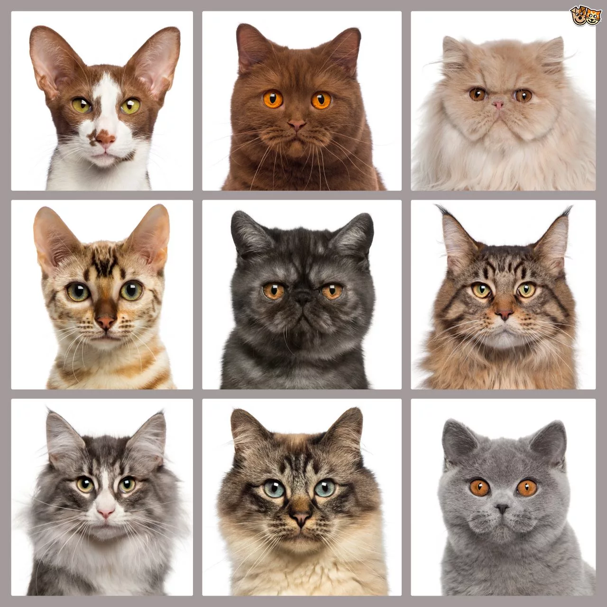

ABOUT

We're a group of passionate cat lovers dedicated to sharing our knowledge and love for these amazing creatures.
We believe that cats bring joy and laughter into our lives, and we're here to help you find your perfect cat.
Traits to Look for in a Cat Breed before Adoption
If you are adopting a cat for the first time, it can feel a little overwhelming initially. Not all cat breeds are
lower-maintenance, some require plenty of love and care. Therefore, before bringing home a feline, it is essential to
understand the characteristics of different kinds of cats, their dietary and grooming needs, and any special care they may
require.
lower-maintenance, some require plenty of love and care. Therefore, before bringing home a feline, it is essential to
understand the characteristics of different kinds of cats, their dietary and grooming needs, and any special care they may
require.
Cat Breeds' Size, Maintenance and Activity
Size: A cat's size differs according to its breed.
Maintenance: Cat breeds vary in coat type, which affects their grooming needs. Some cats require minimal grooming, while others with longer fur need regular care. Additionally, certain breeds may have better resistance to diseases, contributing to their overall health and longevity.
Activity: The activity level of a cat is also influenced by its breed. Not all cat breeds enjoy playtime, some breeds prefer solitude or cuddling with their owners.
Maintenance: Cat breeds vary in coat type, which affects their grooming needs. Some cats require minimal grooming, while others with longer fur need regular care. Additionally, certain breeds may have better resistance to diseases, contributing to their overall health and longevity.
Activity: The activity level of a cat is also influenced by its breed. Not all cat breeds enjoy playtime, some breeds prefer solitude or cuddling with their owners.